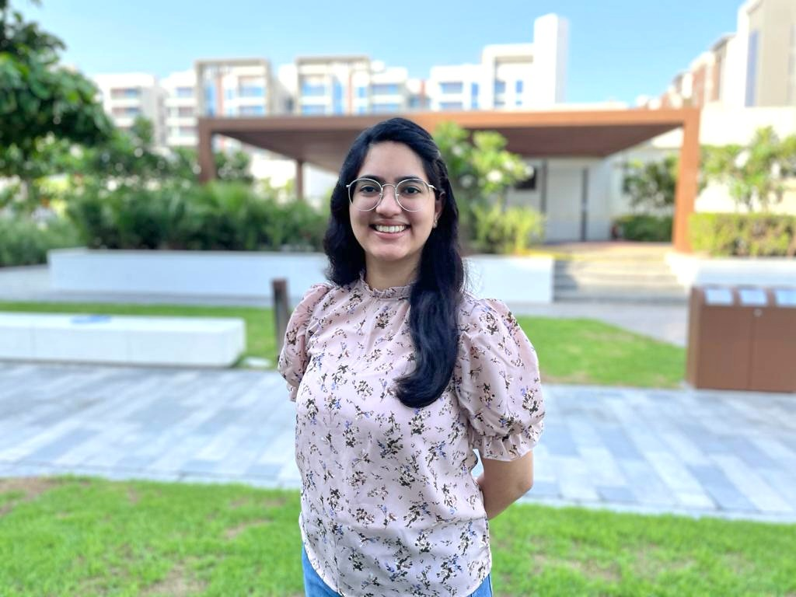

Students look back at their virtual learning experiences
Luke Lawlor
BSc Statistics (3rd year)
Where were you studying during the lockdown/remote working period?
I initially moved into student accommodation not too far from UCL, however they had a policy of making everybody in the building self-isolate for two weeks if a single COVID case were detected. After a while this wasn’t practical, so I decided to move back home.
How much did your university experience change during lockdown versus before the pandemic?
My experience changed quite dramatically as the social aspect of university was much more difficult; not simply the nightlife but discussions in lectures were less enjoyable over Zoom due to the lack of interactions and the blank screens.
Were there any aspects of lockdown studying that you found particularly challenging?
Due to the nature of Zoom I attended lectures from my bedroom, however I found it became quite mundane to work in my room and then sleep in the same room day after day. I eventually decided to change the location I worked from to create a bit of variety.
Were there any aspects that you preferred to in-person studying?
For some modules, it used to be policy not to record the lectures (pre-COVID). Being able to refer to lecture recordings and detailed explanations on specific aspects of the course is much more useful.
Did you manage to stay connected with friends from your course, or even make new ones?
I managed to stay in contact with friends I made in my first year, however making new friends over Zoom wasn’t plausible, and thus it was more difficult to get the same level of interaction in my second year.
What kind of university experience (fully in-person or a blend of in-person and remote) do you hope for going forward, either for yourself or those beginning a degree in the future?
I would hope, going forward, that everything returns to fully in-person teaching, but with the lectures recorded. This would not only make the social aspect of university life better but would also allow you to know your professors beyond a compulsory weekly lecture.
Rishika George
BSc Economics and Statistics (3rd year)

Where were you studying during the lockdown/remote working period?
During the lockdown I was studying in Dubai. That is why, for me, quiet mornings with lessons in the evening (due to the time zone) became the slow ebb and flow of my daily routine.
How much did your university experience change during lockdown versus before the pandemic?
The year 2020 brought a lot of unexpected changes – the most prominent for students being the switch from whiteboards to laptop screens. The idea of remote learning did not seem daunting given the nature of a statistical science course and the familiarity of Lecturecast. While there were no frantic mornings trying (and miserably failing) to find the hidden entrance to the Darwin Building, the sudden isolation and monotony was strange. I did find it easy to adapt to an all-online setting, and with most lectures being asynchronous, I was able to adjust my schedule to better suit my learning style. However, the benefits could not replace the relaxed conversations with the lecturers while waiting for other students to arrive, or those special treats some give out before the Christmas break.
Were there any aspects of lockdown studying that you found particularly challenging?
I would say building and maintaining a rapport with the lecturers was a lot more difficult with online learning.
Were there any aspects that you preferred to in-person studying?
It has almost become second nature to search for the playback speed option on videos to slow down the more challenging bits and save time on familiar concepts. It did help to be able to pause and take down notes for each module as well. Also, office hours were a lot easier to attend in between lectures and tutorials since I did not need to rush to different locations.
Did you manage to stay connected with friends from your course, or even make new ones?
I definitely stayed in touch with the friends I made in my first year. It wasn’t too easy making new friends on the course, but I did meet new people through the UCL Statistics Society which was exciting!
What kind of university experience (fully in-person or a blend of in-person and remote) do you hope for going forward, either for yourself or those beginning a degree in the future?
Having joined in 2019, I was able to experience three contrasting teaching styles, in-person, online and a hybrid setting, each one appealing in its own way. I’m sure every student would have their view on what worked best. I would say online learning was certainly ‘comfortable’ but seeing the portico before class every morning is a charm in itself! That is why, even with the convenience of asynchronous learning and Zoom lectures, I would still prefer the in-person experience any day.
Luke Hardcastle
MSc Medical Statistics
Where were you studying during the lockdown/remote working period?
I moved back in with family when the pandemic started and then moved to London for the second half of the year. I was lucky in both cases to be able to fit a desk in, and have access to a quiet working space.
How much did your university experience change during lockdown versus before the pandemic?
It was a slightly surreal experience starting a degree during lockdown – rather than getting to explore a new place and meet new people I spent my time logging into Zoom and Moodle.
Were there any aspects of lockdown studying that you found particularly challenging?
I missed the small conversations with other students or lecturers after a lecture, which help clarify ideas and topics I hadn’t fully understood.
Were there any aspects that you preferred to in-person studying?
I can’t say I ever minded being able to roll out of bed five minutes before a 9am lecture, or having my cat with me while I studied! Being able to work through online materials at your own pace when you wanted to was also very useful.
Did you manage to stay connected with friends from your course, or even make new ones?
I managed to meet a few new people through group assignments, and there was a useful discord server that was set up at the start of the year for people studying Statistics or Computer Science to chat through. I was lucky, however, to already have a strong support network from previous studies and work.
What kind of university experience (fully in-person or a blend of in-person and remote) do you hope for going forward, either for yourself or those beginning a degree in the future?
Hopefully lectures and tutorials will revert to being in-person, but I also hope that the advances in accessibility and availability of materials brought on by the pandemic will remain!